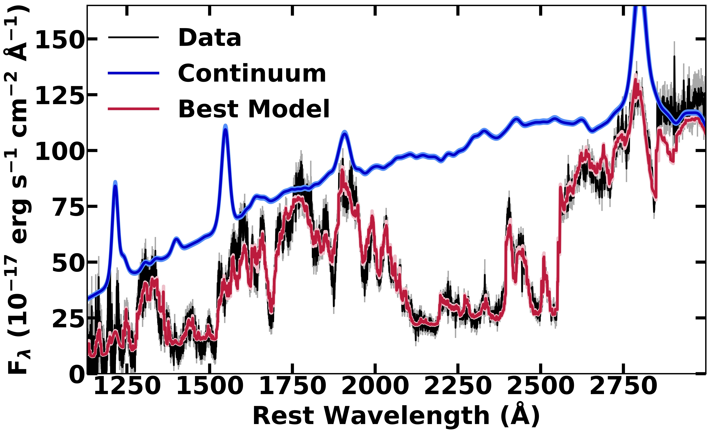

PLEASE GO AWAY!jens-kristian.krogager@ univ-lyon1.fr
Broad Absorption Lines and their link to red quasars
Quasars may play an important role in shutting down star formation activity in galaxies and strong outflows are thought
to be a key ingredient during quasar activity (Fabian et al. 2012). The broad absorption lines (BALs) observed in the
rest-frame UV spectra of quasars are evidence for such powerful winds emerging from the central engine due to their
large, blue-shifted velocities. These winds potentially contribute to the co-evolution of black holes and galaxies in a
process known as quasar feedback (e.g., Glikman et al. 2012 and references therein). Another important population of the
overall quasar demographics is the intrinsically reddened quasars. These red quasars have moderate reddening (E(B-V) ~
0.25–1.5 mag), such that their optical spectra are not fully dust obscured and still dominated by an AGN continuum and
broad emission lines. Red quasars may represent a distinct evolutionary phase between a merger-driven starburst in a
completely obscured AGN, and a normal, unreddened (i.e., blue) quasar (Urrutia et al. 2008).
Large-scale optical surveys of quasars underestimate the fraction of both BAL quasars (BALQs) and red quasars due to the
imposed optical-colour criteria (e.g., Glikman et al. 2012; Fynbo et al. 2013). This is further supported by studies of
radio-selected samples reporting larger numbers of reddened quasars (e.g., White et al. 2003) and BALQs (Morabito et al.
2019). The colour-selection effects limit our understanding of the critical role that these objects play in the
Universe.
Broad absorption lines and their link to red quasars
Low- and high-ionization BALQs offer an array of absorption lines between 1020 and 3000 Å (rest-frame) that can be used
to constrain the outflow properties (e.g., Leighly et al. 2018). The BAL outflow velocity is observed to correlate with
luminosity and because of the strong dependence of outflow energy on velocity (outflow kinetic luminosity; Lkin ∝ v3),
luminous quasars are potentially the strongest sources of feedback among BALQs.
FeLoBAL quasars – a subset of low-ionization BALQs – have a myriad of absorption lines from Fe+ in their near-UV spectra
(see Fig. 1), and therefore they can be studied over a wide redshift range from 0.8 to 4. This range
includes the cosmic noon where feedback may have been especially impactful. Sixty percent of red quasars show BALs in
their spectra, nearly all of which are low-ionization BALs or FeLoBALs.

Fig. 1 – The figure shows the best-fit synthetic BAL model to the
SDSS spectrum of a FeLoBAL quasar allowing us to extract physical outflow
parameters such as density, ionization parameter and outflow velocity (Choi et al. 2020).
What is the true number of BALQs?
A core goal of PAQS is to quantify the unbiased, intrinsic fraction of BAL quasars and the physical
conditions of the outflowing material over the redshift range 0.8 < z < 4.
The fraction of BALQs depends on the sample selection: Hewett & Foltz (2003) infer a fraction of 20% in
optically selected samples, but it may be as large as 40% depending on the source luminosity
(Bruni et al. 2019). There is further observational evidence that BALQs are 3.5 times more common
at z = 4 than at z = 2 (Allen et al. 2011). This may be evidence that black hole feedback evolves,
a fact that may be important for constraining feedback models, if the fraction of quasars that have
BALs reflects the global covering fraction of the outflowing gas.
What are the gas properties of BAL outflows?
We aim to characterize the physical properties of the outflow in each quasar to obtain better insight
into the potential interrelation between individual quasar subtypes (low-ionization versus high-ionization BALs and red
quasars). This may provide a basis for understanding the link, if present, between each quasar subtype and different
galaxy merger stages. We will use our novel spectral synthesis software SimBAL (Leighly et al. 2018) on the sample of
BALQs to trace the outflow properties and feedback over cosmic time. An example of the spectral fitting is presented in
Fig. 1. Depending on the absorption lines present, we can obtain excellent constraints on the physical properties of the
winds (ionization parameter, density) which in turn yield measurements of the outflow properties (location, mass outflow
rate, kinetic luminosity; Choi et al. 2020).
What is the true number of red quasars?
We aim to constrain black hole masses and accretion rates and determine the properties and representative fractions of
the overall quasar population (red, blue and BAL sub-types). Intrinsically reddened quasars make up ~20 – 30% of quasars
(Glikman et al. 2012). However, current representative samples are small (~150 objects), which makes it difficult to
study any redshift evolution of the red quasar population. Since the red quasar phenomenon may be linked to an
evolutionary phase with higher accretion rates (Kim et al. 2015), measuring the black hole masses and accretion rates in
a representative, unbiased sample will be crucial for quantifying any redshift evolution. If the red quasar phenomenon
is an evolutionary phase, then determining their fraction as a function of redshift would constrain the duration of that
phase.
References
Allen et al. 2011, MNRAS 410, 860;
Bruni et al. 2019, A&A 630, 111;
Choi et al. 2020, ApJ 891, 53;
Fabian et al. 2012, ARAA, 50, 455;
Fynbo et al. 2013, ApJS 204, 6;
Glikman et al. 2012, ApJ 757, 51;
Hewett & Foltz 2003, AJ 125, 1784;
Leighly et al. 2018, ApJ 866, 7;
Morabito et al. 2019, A&A 622, A15;
Urrutia et al. 2008, ApJ, 674, 80;
White et al. 2003, ApJ, 126, 706